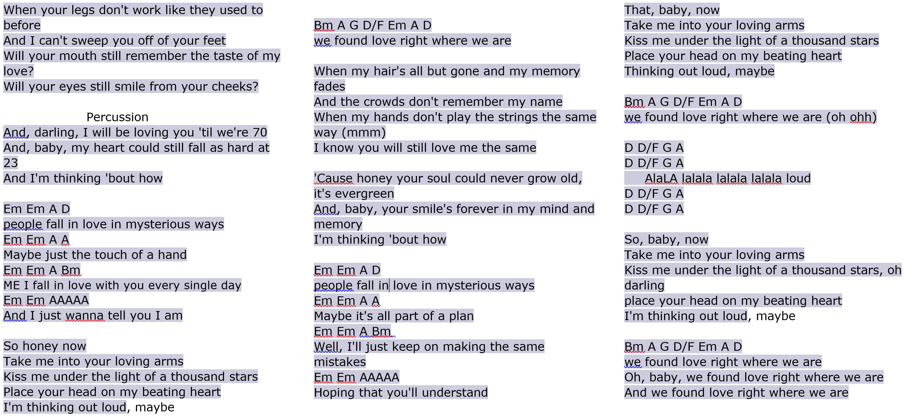
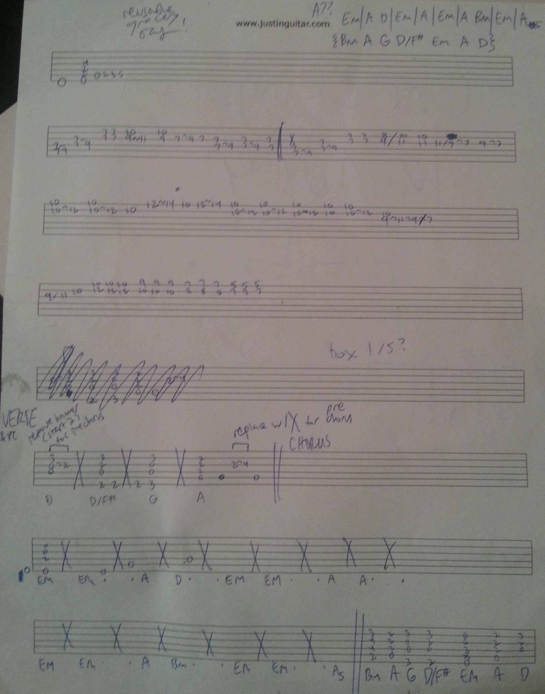

From Evan
What a crazy adventure this has been. It's 5am so I won't write out the whole story right now, but maybe we can find a time to talk about the takes, tunings, broken strings, pliers, opossums, wrong strings, late nights, editing software, file formats, GitHub upload limits and commit deletions, and more that I encountered along the way. As imperfect as this is, I'm psyched to have pulled off my first multi-part recording! It's something I've thought about for a long time.
I took the song a whole-step down to better suit my vocal range. Fun fact: Sheeran does the same in many of his live performances!
Acoustic guitar is a Bedell HGD-28-G: dreadnought, solid spruce top, rosewood back and sides, mahogany neck.
Electric guitar is an AXL Johnson (cheap Strat copy). Bridge pickup. Tone and volume maxed.
Amp is a Kustom KGA16R. Lead. Gain 1.1/5, volume 0.4/5, low 3/5, mid 4/5, high 5/5.
Edited in CyberLink PowerDirector 11.
I've also included my working documents below, if you want to take a peep. The first is what I referenced during the performance, and the second is what I used during practice.
 I did have some help learning the parts, from my good friend Justin Sandercoe. Below is a 15 minute lesson for the rhythm part. I've set it so it should only play from 7:36 to 12:00. If you've got four and a half minutes, I do recommend the excerpt. I think it's pretty funny.